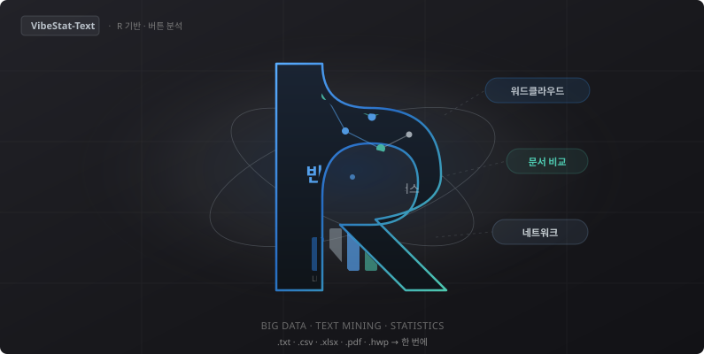

Windows 텍스트마이닝 · 시범판 0.7.7-beta.2
첫 실행 시 시범판 이용약관에 동의하면 바로 사용할 수 있습니다. (인증번호 불필요) SmartScreen 경고 → 「추가 정보」→「실행」
소개 보기 ↓
VibeStatics · 바이브스타틱스
코딩 없이 워드클라우드 · LDA · 형태소 빈도 · 문서 비교까지. TXT·CSV·Excel·PDF·HWP를 넣고 버튼만 누르면 R 분석이 실행됩니다.
